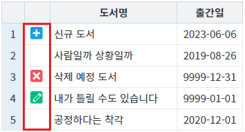

DataList의 'rowStatus'(행 상태)의 값이 'R'인 데이터를 JSON 형식으로 추출하는 방법입니다. 이 기능은 아래의 두 함수를 호출하여 구현할 수 있습니다. - getRowIndexByStatus : 'rowStatus'(상태값)가 일치하는 행(Row)의 Index를 배열로 반환 - getRowJSON : 행(Row)의 Index에 해당하는 데이터를 JSON객체로 반환
DataList는 행(Row)마다 삽입, 수정, 삭제 등의 상태값(RowStatus)을 가지고 있습니다.
상태값은 행의 'rowStatus' 키에 할당되며 문자형 코드로 할당됩니다.
다음 목록은 상태값에 따른 문자형 코드값과 숫자형 코드값입니다.
- status : R / statusValue : 0 - 초기 상태. (변화없음)
- status : U / statusValue : 1 - 갱신. (수정)
- status : C / statusValue : 2 - 삽입. (insert API 호출 시)
- status : D / statusValue : 3 - 삭제. (delete API 호출 시)
- status : V / statusValue : 4 - 삽입 후 삭제. (insert 후 delete 호출 시)
- status : E / statusValue : 5 - 제거. (remove API 호출 시)
DataList의 'rowStatus'(행 상태)의 값이 'R'인 데이터의 인덱스 추출하기
DataList의 'rowStatus'(행 상태)의 값이 'R'인 데이터를 JSON 형식으로 추출하기
STEP1. 초기 상태 확인하기
실행된 GridView의 각 행의 상태 컬럼을 확인합니다. - 1번째 행 : 삽입 상태(C) - 2번째 행 : 초기 상태(R) - 3번째 행 : 삭제 상태(D) - 4번째 행 : 수정 상태(U) - 5번째 행 : 초기 상태(R)
그림 1.브라우저(Chrome) 실행 예시

STEP2. 버튼 Index 추출하기를 클릭합니다.
영역 [로그 확인]에 출력된 로그를 확인합니다. 상태값이 'R'(초기 상태)인 행의 인덱스가 배열로 반환됩니다. 결과 예시 ) [1,4] ----------------------------------------------------------------- 로그 예시 [14:51:08] 버튼 [Index 추출하기] 클릭 [14:51:08] # 'rowStatus'의 값이 'R'인 Row Index - return 예시) [14:51:08] [1,4] ----------------------------------------------------------------- (브라우저의 개발자 도구 콘솔에도 로그가 출력되며, 반환된 객체를 확인할 수 있습니다.)
STEP1. 초기 상태 확인하기
실행된 GridView의 각 행의 상태 컬럼을 확인합니다. - 1번째 행 : 삽입 상태(C) - 2번째 행 : 초기 상태(R) - 3번째 행 : 삭제 상태(D) - 4번째 행 : 수정 상태(U) - 5번째 행 : 초기 상태(R)
그림 2.브라우저(Chrome) 실행 예시
STEP2. 버튼 JSON 형식으로 데이터 추출하기를 클릭합니다.
영역 [로그 확인]에 출력된 로그를 확인합니다. 상태값이 'R'(초기 상태)인 행의 인덱스가 배열로 반환됩니다. 결과 예시 ) [{ "book_name": "사람일까 상황일까", "published_date": "20190826", "rowStatus": "R" }, { "book_name": "공정하다는 착각", "published_date": "20201201", "rowStatus": "R" }] ----------------------------------------------------------------- 로그 예시 [08:35:49] 버튼 [JSON 형식으로 데이터 추출하기] 클릭 [08:35:49] # 'rowStatus'의 값이 'R'인 행의 데이터를 JSON 형식으로 추출하기 - return 예시) [08:35:50] [ { "book_name": "사람일까 상황일까", "published_date": "20190826", "rowStatus": "R" }, { "book_name": "공정하다는 착각", "published_date": "20201201", "rowStatus": "R" } ]----------------------------------------------------------------- (브라우저의 개발자 도구 콘솔에도 로그가 출력되며, 반환된 객체를 확인할 수 있습니다.)
원하는 시점에 DataList의 함수 'getRowIndexByStatus'를 이용하여 스크립트를 작성합니다.
[소스 코드 예시]
//예제 파일에서는 스크립트 scwin.btn_ex1_onclick에 작성되어 있습니다. // DataList 'dlt_books'의'rowStatus'의 값이 'R'인 Row Index를 배열로 추출합니다. let arrResult = dlt_books.getRowIndexByStatus("R");
원하는 시점에 DataList의 함수 'getRowIndexByStatus'와 'getRowJSON'를 이용하여 스크립트를 작성합니다.
[소스 코드 예시]
//예제 파일에서는 스크립트 scwin.btn_ex2_onclick에 작성되어 있습니다. // DataList 'dlt_books'의'rowStatus'의 값이 'R'인 Row Index를 배열로 추출합니다. let arrRowIndex = dlt_books.getRowIndexByStatus("R"); // 변수 'arrRowIndex'의 길이를 추출합니다. let numArrRowIdxLen = arrRowIndex.length; // 결과를 담을 배열을 선언합니다. let arrResult = []; // 변수 'arrRowIndex'의 길이만큼 'for' 구문을 실행합니다. for (let i = 0; i < numArrRowIdxLen; i++) { let numRowIndex = arrRowIndex[i]; // 행의 Index let jsnRowData = dlt_books.getRowJSON(numRowIndex); // 행의 데이터를 JSON 형식으로 추출 // 추출한 JSON 형식의 데이터를 배열에 추가 arrResult.push(jsnRowData); }
getRowIndexByStatus
getRowJSON
[웹스퀘어5 SP5 개발 가이드] DataList
링크 : https://docs1.inswave.com/sp5_user_guide/e8b94a03286e4f9f#9954ca390ab74983